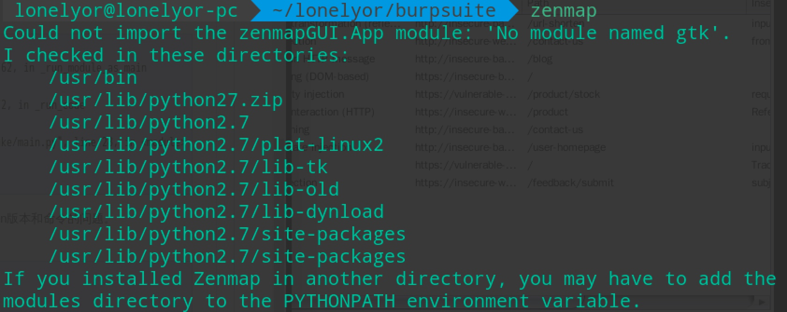
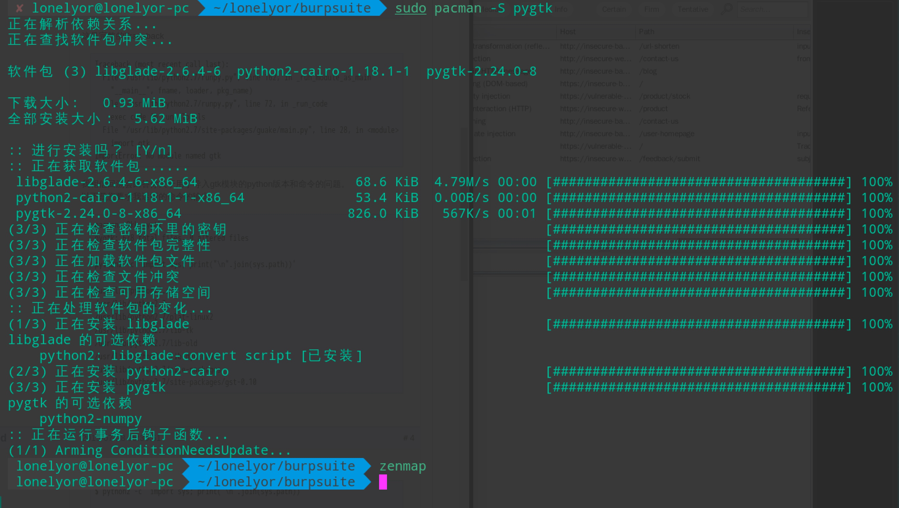

Arch系常用技巧与问题汇总
BlackArch安装vmtools后依然不能复制粘贴解决办法
执行下面两条命令：
sudo /usr/bin/vmware-user
sudo /etc/init.d/vmware-tools restart
给指定用户添加sudo
编辑 /etc/sudoers 文件 添加 “<用户名> ALL=(ALL:ALL) ALL”
给linux终端加一个移动到回收站的功能
在 .bashrc 或 .zshrc 添加一个alias来实现
alias trash="mv -t /home/lonelyor/Trash"
这里的Trash目录自行定义，用法是在终端输入trash test.txt
更多方法可以看 https://superuser.com/questions/1252676/creating-alias-for-trash 中的留言
安装Docker
sudo pacman -S docker
启动docker服务 sudo systemctl start docker
设置docker开机启动服务 sudo systemctl enable docker
干掉sudo
如果还没有 docker group 就添加一个 sudo groupadd docker
将自己的登录名(\({USER} )加入该 group 内。然后退出并重新登录就生效啦 sudo gpasswd -a \){USER} docker
重启 docker 服务 sudo systemctl restart docker
切换当前会话到新 group 或者重启 X 会话。注意，这一步是必须的，否则因为 groups 命令获取到的是缓存的组信息，刚添加的组信息未能生效，所以 docker images 执行时同样有错。
newgrp - docker
或者
pkill X
arch 无法使用 zenmap，报错：'No module named gtk'的解决办法
问题截图： 
参考链接：https://bbs.archlinux.org/viewtopic.php?id=200299
问题解决办法：安装 pygtk 包 
Manjaro vmware 虚拟机共享宿主机文件夹
在客机里运行如下命令可以列出共享目录： $ vmware-hgfsclient

然后以如下方式挂载：
# mkdir <shared folders root directory>
# vmhgfs-fuse -o allow_other -o auto_unmount .host:/<shared_folder> <shared folders root directory>
我发现这个方法比较麻烦，而且后续问题比较多。 目前使用 smb 文件共享来实现虚拟机与主机共享文件，不依赖虚拟机。
arch 使用 nginx -t 时报错“could not build optimal types_hash, you should increase either types_hash_max_size: 1024 or types_hash_bucket_size: 64; ignoring types_hash_bucket_size” 解决办法
根据官网说明解决。 https://wiki.archlinux.org/index.php/Nginx
添加配置 /etc/nginx/nginx.conf
http {
types_hash_max_size 4096;
server_names_hash_bucket_size 128;
...
}

manjaro 安装 vmtools
下载vmwaretools补丁
git clone https://github.com/rasa/vmware-tools-patches.git
进入vmware-tools-patches目录
cd vmware-tools-patches
运行补丁 中间一路回车 sudo ./patched-open-vm-tools.sh
经过漫长的等待不负众望迎来了第一个错误提示：
找不到/lib/modules/4.19.28-1-MANJARO
这里不慌，反手进入这个目录发现有三个文件：3.16.65-1-MANJARO、4.19.36-1-MANJARO、extramodules-4.19-MANJARO
然后我把4.19.36-1-MANJARO重命名为他需要的4.19.28-1-MANJARO文件名，这样他脚本加载到运行4.19.28-1-MANJARO时可以正确找到该文件，就算这个文件原名不是这个，相当于是假装降级操作
sudo mv 4.19.36-1-MANJARO 4.19.28-1-MANJARO
删除刚刚安装到一半就报错的安装目录
sudo rm -rf vmware-tools-patches
重新安装补丁
sudo ./patched-open-vm-tools.sh
完成
Enjoy
作者：猴猴猴猴猴猴子 来源：CSDN 原文：https://blog.csdn.net/weixin_43043603/article/details/89853916 版权声明：本文为博主原创文章，转载请附上博文链接！
KVM创建虚拟机时报权限错误：monitor: Could not access KVM kernel module: Permission denied failed to initialize KVM: Permission
修改/etc/libvirt/qemu.conf，
#user="root"
user="root"
#group="root"
group="root"
sudo systemctl restart libvirtd.service
Proxmox TASK ERROR: Failed to run vncproxy.解决办法
登陆proxmox的shell然后执行命令：systemctl restart pveproxy 即可。 参考文章： https://www.forum.modulesgarden.com/whmcs-modules/novnc-not-vnc-console-login-to-proxmox-host-failed-t2547/
manjaro更改国内源操作
1、排序并增加中文rank源
sudo pacman-mirrors -i -c China -m rank
选择喜欢的就行，不知道就全选好了。
2、添加 archlinuxcn（archlinux 可用）
修改/etc/pacman.conf文件，在文件后添加如下语句：
[archlinuxcn]
SigLevel = Optional TrustedOnly
Server = https://mirrors.ustc.edu.cn/archlinuxcn/$arch
导入GPG Key
sudo pacman -Syy && sudo pacman -S archlinuxcn-keyring
使用Archiso自制linux发行版
参考官方文档，自制 archlinux 可启动镜像。这样就可以拥有自己的 linux 发行版了。
https://wiki.archlinux.org/index.php/Archiso
修改 pacman.conf，添加自定义存储库

将 customrepo 的内容改为 archlinuxcn
#[customrepo]
SigLevel = Optional TrustAll
Server = file:///home/user/customrepo/$arch
改为
#[archlinuxcn]
SigLevel = Optional TrustAll
Server = https://mirrors.ustc.edu.cn/archlinuxcn/$arch
archlinux 安装 vmtools 遇到坑了怎么办
使用这个脚本即可：https://github.com/rasa/vmware-tools-patches
$ git clone https://github.com/rasa/vmware-tools-patches.git
$ cd vmware-tools-patches
$ ./patched-open-vm-tools.sh
linux 在终端中打开图形化文件管理器
xdg-open ./ 用图形化文件管理器打开当前文件夹
xdg-open "dir" 打开任意路径
linux sudo配置免密及排除部分命令
lonelyor ALL=(ALL) NOPASSWD:ALL, !/usr/bin/reboot, !/sbin/reboot, !/sbin/ifconfig, !/sbin/shutdown, !/sbin/route, !/sbin/ip
即lonelyor可以免密码执行除reboot、ifconfig、shutdown、route、ip之外的指令。
注意，/etc/sudoers的命令是顺序执行，添加在错误的位置（比如 %sudo ALL=(ALL:ALL) ALL 之前）是无效的。
linux sudo:/etc/sudoers 可被任何人写 解决方案
只需要使用su -进入 root
然后cd /etc，使用chmod 0440 sudoers将权限改回来即可。
终端配置代理
export ALL_PROXY=socks5://127.0.0.1:1080
无法安装docker
请检查是否开启防火墙，防火墙是否屏蔽了docker的传入链接。 通常连不上docker是因为防火墙的原因
批量删除当前目录及其子目录下指定后缀名文件
find . -name "*.tmp" -type f -print -exec rm -rf {} \;
降低cpu使用率
pulimit -l 50 -p 1234 -l后面是使用百分比，-p后面是进城PID，可以使用htop查看进程pid
arch安装配置mongodb
pacman -S mongo
/usr/bin/.mongo --help
systemctl start mongodb.service
这样就启动了mongo，启动的配置文件是：cat /etc/mongodb.conf
然后退出到用户目录，运行mongo
~ ❯❯❯ mongo
/var/lib/mongodb/ 是Arch Linux 的 ** 默认dbpath**
但是无法访问
修改mongodb的用户组为自己的
chown mongodb:lonelyor mongodb
mkdir /home/lonelyor/工作/mongodb
touch /home/lonelyor/工作/mongodb/data
touch /home/lonelyor/工作/mongodb/logs
linux下搜狗输入法不能用的解决办法
删除
～/config
下的
sogou-qimpanel
SogouPY
SogouPY.users
这三个文件夹，然后重启。
arch手动设置屏幕分辨率
参考 https://wiki.archlinux.org/index.php/Xrandr_(%E7%AE%80%E4%BD%93%E4%B8%AD%E6%96%87)
1、先使用xrandr查看屏幕相关信息
2、编辑/e/X/xorg.conf.d ❯❯❯ sudo nano 11-lonelyorx.conf (自己新建)
结果我不怎么会写配置文件，导致写了都没法启动图形界面了，于是又删了，打算手动更改。
3、
xrandr查看当前设置
cvt 1920 1080
cvt 2560 1440
找到正确的参数
xrandr --newmode "1920x1080_60.00" 173.00 1920 2048 2248 2576 1080 1083 1088 1120 -hsync +vsync
xrandr --newmode "2560x1440_60.00" 312.25 2560 2752 3024 3488 1440 1443 1448 1493 -hsync +vsync
然后设置
xrandr --addmode eDP1 1920x1080_60.00
xrandr --addmode HDMI1 2560x1440_60.00
如果一且顺利的话，此时再查看xrandr命令，将发现最佳分辨率设置成功。
4、修改分辨率
xrandr --output eDP1 --mode 1920x1080_60.00
xrandr --output HDMI1 --mode 2560x1440_60.00
xrandr --newmode "1920x1080_60.00" 173.00 1920 2048 2248 2576 1080 1083 1088 1120 -hsync +vsync
xrandr --addmode eDP1 1920x1080_60.00
xrandr --output eDP1 --mode 1920x1080_60.00
这样屏幕分辨率就变成1080p了。
查看端口占用
使用命令：
lsof -i:8000
或
netstat -tunlp|grep 8000
均可。
linux查看磁盘空间占用情况
主要是使用 df 命令，使用 df --help 可以查看更多选项。
举例： df -k 以KB为单位显示磁盘使用量和占用率。 df -k 以M×××
使用“du -ck /home”命令，列出home目录下所有文件或目录占用的大小，以KB作为计量单位。以及统计出当前home目录占用的总大小。
解决npm更新或安装软件时下载较慢等问题
更换淘宝源即可，在终端执行命令：
npm config set registry https://registry.npm.taobao.org
v2ray实现科学上网
1、linux一键安装 bash <(curl -L -s https://install.direct/go.sh)
此脚本会自动安装以下文件：
/usr/bin/v2ray/v2ray：V2Ray 程序； /usr/bin/v2ray/v2ctl：V2Ray 工具； /etc/v2ray/config.json：配置文件； /usr/bin/v2ray/geoip.dat：IP 数据文件 /usr/bin/v2ray/geosite.dat：域名数据文件
2、后面的我会了就不写了...2333


Windows常用技巧与问题汇总
windows下创建和启动wifi
整理文件时候找到了3年前写的东西：
创建 wifi netsh wlan set hostednetwork mode=allow ssid=!@#$%&* key=passwd123 启动 wifi netsh wlan start hostednetwork
虚拟机安装win10操作系统
本片文章是为新手准备的
虚拟机安装win10可以查看以下教程： http://baijiahao.baidu.com/s?id=1597148758310739517&wfr=spider&for=pc
若原文链接失效，则可以百度搜索“虚拟机安装win10操作系统”
解决windows右键新建消失问题
新建一个文件后缀名写为reg（注册表文件格式）的文件。 然后用记事本或文本编辑器打开，写入文件内容：
Windows Registry Editor Version 5.00
[HKEY_CLASSES_ROOT\Directory\Background\shellex\ContextMenuHandlers\New]
@="{D969A300-E7FF-11d0-A93B-00A0C90F2719}"
保存，然后双击该文件，即可。
OneDrive映射到本地（像访问本地磁盘一样访问网盘）
参考以下链接即可： http://baijiahao.baidu.com/s?id=1549908946659905&wfr=spider&for=pc
举一反三，webdav、nfs、samba等都可以使用这种方式挂载，来方便访问。
windows右键添加管理员获得所有权
右键添加获得管理员所有权是个比较方便的功能。
打开记事本或者别的文本编辑器，然后写入如下内容:
Windows Registry Editor Version 5.00
[HKEY_CLASSES_ROOT\*\shell\runas]
@="管理员取得所有权"
"NoWorkingDirectory"=""
[HKEY_CLASSES_ROOT\*\shell\runas\command]
@="cmd.exe /c takeown /f \"%1\" && icacls \"%1\" /grant administrators:F"
"IsolatedCommand"="cmd.exe /c takeown /f \"%1\" && icacls \"%1\" /grant administrators:F"
[HKEY_CLASSES_ROOT\exefile\shell\runas2]
@="管理员取得所有权"
"NoWorkingDirectory"=""
[HKEY_CLASSES_ROOT\exefile\shell\runas2\command]
@="cmd.exe /c takeown /f \"%1\" && icacls \"%1\" /grant administrators:F"
"IsolatedCommand"="cmd.exe /c takeown /f \"%1\" && icacls \"%1\" /grant administrators:F"
[HKEY_CLASSES_ROOT\Directory\shell\runas]
@="管理员取得所有权"
"NoWorkingDirectory"=""
[HKEY_CLASSES_ROOT\Directory\shell\runas\command]
@="cmd.exe /c takeown /f \"%1\" /r /d y && icacls \"%1\" /grant administrators:F /t"
"IsolatedCommand"="cmd.exe /c takeown /f \"%1\" /r /d y && icacls \"%1\" /grant administrators:F /t"
然后另存为：管理员获得所有权.reg 文件名可以随便写，但是后缀记得写成reg（改成这个后缀后文件图标就会变成一个破碎蓝色魔方）。 然后右键以管理员身份运行，若弹框注册表xxx的，同意就行了。

Copyright © 2015 Powered by MWeb, Theme used GitHub CSS.